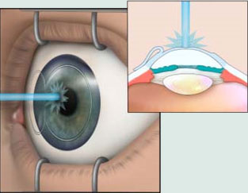

|
O único tratamento eficaz para a catarata é a cirurgia. A Facoemulsificação é a técnica cirúrgica mais avançada para a correção de catarata. É feita uma pequena abertura na córnea, através da qual a catarata é dissolvida (emulsificada) e aspirada ao mesmo tempo. Após a retirada do cristalino opacificado, é colocada uma lente intraocular*, que substituirá a lente natural. Apesar da extrema sofisticação da técnica cirúrgica, e da importância da perícia do cirurgião para realizar o procedimento, a cirurgia é bastante segura, e realizada em pouco tempo, sem sequer ser necessário que se faça sutura. A recuperação do paciente também é rápida, e o paciente normalmente recebe alta hospitalar em poucas horas.
* LIO (Lentes Intra-oculares) com possibilidade de correção visual para longe e também para perto, com ou sem filtro de luz, com correção do astigmatismo, dando ao paciente a escolha de não usar mais óculos após cirurgia. |
Lente intraocular sendo implantada dentro do saco capsular, substituindo o cristalino natural
|
| Infelizmente nem sempre o glaucoma apresenta sintomas que possam indicar ao paciente a instalação da doença, mas uma complicação quase inevitável é o comprometimento da qualidade da visão. Por isso, todas as pessoas com mais de 40 anos devem ser submetidas regularmente a um exame oftalmológico de rotina. Histórico familiar de glaucoma aumenta em cerca de 6% a chance de desenvolver a doença, fator racial também é importante (maior incidência na raça negra). Metade das pessoas que sofrem de glaucoma não sabem disso. Mesmo ainda não tendo sido estabelecida a relação precisa entre a pressão intraocular e o glaucoma, todos os principais tratamentos disponíveis concentram-se em sua redução, seja com o uso de colírios, seja, em casos mais severos, com a realização de uma cirurgia, que pode ser a trabeculectomia, a trabeculoplastia a laser e outras. |
Tratamento a laser para glaucoma
|
|
Esse tipo de procedimento cirúrgico pode diminuir ou mesmo eliminar a dependência de uma pessoa por óculos ou lentes de contato, em virtude de distúrbios de visão bastante comuns, como miopia, hipermetropia e astigmatismo. A cirurgia refrativa utiliza laser para remodelar a córnea do paciente e eliminar as sutis alterações que causam distúrbios oculares. Primeiramente, um instrumento chamado microcerátomo é usado para cortar uma “janela” de tecido córneo para permitir a passagem do Laser. Essa técnica é comumente conhecida como LASIK e é realizada sob anestesia local (colírio). Mesmo tendo se tornando bastante comum e acessível para os pacientes, a cirurgia refrativa não pode ser considerada um procedimento simples. Existem diversos problemas ou características que podem classificar um paciente como inelegível para a cirurgia. Por essa razão, pacientes que desejem fazer uma cirurgia refrativa passam por um completo e detalhado exame oftalmológico |

Laser remodelando a córnea do paciente
|
|
Com o passar dos anos, a pele tende a tornar-se mais flácida e sem elasticidade. E é na região dos olhos que esses primeiros sinais ficam mais evidentes. Acúmulo de gordura, pele e rugas nas pálpebras alteram a fisionomia dando à expressão do olhar um ar de cansaço e tristeza. A Blefaroplastia, por exemplo, é o nome da cirurgia que visa a correção das pálpebras, com a remoção de bolsas e excesso de pele nesta região. Tem dúvidas se você tem indicação para a Cirurgia de Blefaroplastia e sobre quais são as opções de tratamento para o seu caso? Ou quer mais informações sobre como melhorar o aspecto da face e dos olhos? Entre em contato conosco e agende uma consulta com a Dra Lúcia Hoehl e tire suas dúvidas. Teremos prazer em atendê-lo! |
Dezoito anos se passaram desde que o Núcleo de Oftalmologia de Copacabana foi fundado, e de lá pra cá foram muitas batalhas e conquistas. O empenho de nossos colaboradores e parceiros aliados ao profissionalismo de nossos oftalmologistas na mais perfeita sinestesia tem proporcionado ao NOC manter-se entre as clínicas mais conceituadas e promissoras de Copacabana. E o nosso crescimento não para, e no que depender de nossa equipe, nos desenvolveremos ainda mais a cada dia.
Neste 10 de julho e em comemoração ao Dia mundial da Saúde Ocular, gostaríamos de aproveitar e agradecer a você: paciente, amigo, colaborador, parceiro, médico, técnico, prestador, e a todos que contribuíram para as mais de 2 mil cirurgias alcançadas ao longo destes anos.
Nosso muito obrigado, pois foi e continua sendo, um prazer atendê-los!
Daniel Rocha
Gerente de Serviço de Saúde
Um agradecimento especial à equipe cirúrgica:
Dr Jorge Fernando M. de Oliveira (cirurgião)
Dra Juliane Moledo de Siqueira (cirurgiã)
Dra Rosane de Oliveira (anestesista)
Leiliane Maria Mendes de Souza (instrumentadora)